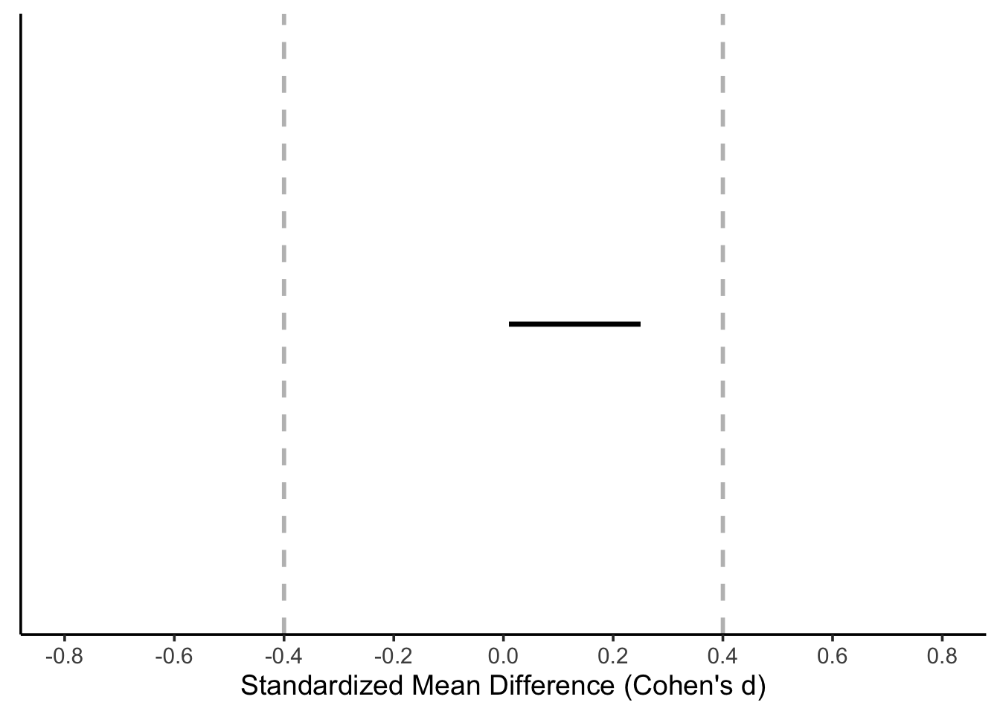

# Load packages
library(patchwork) # combine ggplots
library(metafor) # calculate effect sizes
library(knitr) # generation of the document
library(tidyverse) # wrangle and tidy data
library(kableExtra) # create tables
library(pwr) # conduct power analyses
library(purrr) # perform iterative tasks
library(faux) # simulate factorial data
library(MBESS) # calculate effect sizes
library(criticalESvalue) # calculate critical effect sizes
library(BUCSS) # adjust for publication bias and uncertainty
library(broom) # tidy the result of a test
library(emmeans) # pairwise comparisons
library(Superpower) # conduct power analysis for factorial designs
library(TOSTER) # perform equivalence tests
library(lme4) # perform linear mixed model analysisA hands-on guide to a priori power analysis
Note
This document focuses on conducting a priori power analyses as a method for justifying sample sizes in hypothesis-testing studies. For other sample size justifications, readers are referred to Daniël Lakens (2022a). The scope of this document is limited to a priori power analyses for tests that fall under the General Linear Model (GLM) framework, including t-tests, analysis of variance (ANOVA), analysis of covariance (ANCOVA), equivalence tests and minimum-effect tests. This document does not present original content. Rather, it compiles material from existing sources, including blog posts (Solom Kurz’s, Daniël Lakens’ blogs), online resources (LMU Open Science Center, PsyteachR and Power Analysis with Superpower) as well as published articles—all of which are cited throughout the document. The aim is to provide students and researchers with resources that explain the importance designing studies with adequate power to reject the presence or absence of meaningful effects and assist them in conduct valid and reproducible a priori power analyses.
Disclaimer
These guidelines are intended as a framework and introduction—not as definitive proof. If you notice any inaccuracies or errors, please don’t hesitate to reach out. I strongly encourage researchers to collaborate with (applied) statisticians to ensure their a priori power analyses are methodologically sound.
Required packages
1 First things first
1.1 Null Hypothesis Significance Testing as inferential framework
Researchers are often interested in making dichotomous claims (e.g., “the intervention is superior to control”; “the intervention is not superior to the control”) while controlling the probability that such claims are wrong. One common tool for making such claims is the Null Hypothesis Significance Testing (NHST) framework, which relies on p-values to guide decision-making. When conducting a hypothesis test there are 4 potential outcomes:
True positive: the statistical test yields a significant p-value when there is a true effect or difference between the groups/conditions being compared. In this case the test correctly rejects the null hypothesis of no difference.
True negative: the statistical test yields a non-significant p-value when there is no true effect or difference between the groups being compared. In this case the test correctly fails to reject the null hypothesis of no difference.
False positive or type I error (usually set to alpha = 0.05): A type I error occurs when a statistical test yields a significant p-value (p < alpha) even though there is no true effect or difference between the groups being compared. In this case the test wrongly rejects the null hypothesis of no difference committing a type I error. Researchers can control the probability of making a type I error by setting a thresholds, commonly setting alpha to 0.05 (5%) before conducting a hypothesis test. That means that in the long run, no more than 5% of tests will yield false positives.
False negative or type II error (denoted by β): A type II error occurs when a statistical test fails to detect a true effect—that is, it yields a non-significant p-value when there is a true effect or difference between the groups being compared. In this case the test fails to reject the hypothesis of no difference committing a type II error. Researchers can reduce the risk of type II error by designing studies with high statistical power (hereafter referred to as power). Power is defined as 1-β, where β is usually set to 0.2 (20%) and ensures than in the long run, no more than 20% of tests will yield a false negative.
Important
In NHST, the goal of a test is to evaluate whether the data provide sufficient evidence to reject the null hypothesis (H0). Typically, H0 specifies that there is no effect or difference (i.e., H0 = 0). However, H0 can also be set to non-zero value or even defined as a range, depending on the research question. researchers specify a range of non-zero values that constitute H0 (see Daniel Lakens (2019) for a detailed explanation on different types of H0 and Daniël Lakens (2017) for equivalence tests). When the test leads to the rejection of H0, researchers conclude that the alternative hypothesis (H1) is supported by data, which includes all values not covered by H0.
In essence, if researchers aim to make claims while controlling how often they will be wrong in the long run, they should use NHST to test hypotheses and ensure that both type I and type II errors are appropriately controlled.
1.2 What is statistical power?
Power is defined as the probability that a statistical test will yield a significant p-value given that a true effect exists (i.e., the null hypothesis is false). It depends on several factors: the effect size, the total sample size (N), the statistical test and α. For a given α, the power of a test will increase as the effect size and/or the sample size increases. In the frequentist framework, power is interpreted as a long-term probability. That is, if you were going to repeat the same experiment many times under identical conditions where the effect size is fixed, power represents the proportion of studies that would yield a significant p-value. For example, a test with 80% power is expected to detect the effect 80 out of 100 times on average. If you want to plan a study with 80% power, a power analysis will answer the following question:
“If I repeated my experiment 1000 times, what sample size would allow me to reject the null hypothesis 80% of the time?”
Let’s illustrate the concept of power using an unpaired t-test with an effect size d = 0.4. Unless otherwise specified, we assume α = 0.05 throughout the article.
# Ensure reproducibility
set.seed(050990)
# Set parameters
nsims <- 1000 # number of simulations
p_values <- numeric(nsims) # create an empty vector
N <- 200 # total sample size
smd <- 0.4 # standardized mean difference
sd <- 1 # standard deviation (SD)
alpha_level <- 0.05
# Run simulation
for (i in 1:nsims) {
intervention <- rnorm(n = N/2, mean = smd, sd = 1)
control <- rnorm(n = N/2, mean = 0, sd = 1)
test_result <- t.test(intervention,
control,
alternative = "two.sided")
p_values[i] <- test_result$p.value
}
# Return proportion of significant p-values
power <- mean(p_values < alpha_level)*100Assuming a true effect size of d = 0.4, a standard deviation (SD) of 1, and an N of 200 (100 per group), such study design would achieve a power of 80.4. In other words, repeating the same experiment many times under the same conditions, approximately 80.4% of the resulting p-values would fall below 0.05. This is illustrated in the histogram shown in Figure 1, where roughly 80% of the p-values are smaller than 0.05, reflecting the power of the test. Under the alternative hypothesis, the greater the power of a test, the larger the proportion of p-values that fall below 0.05, resulting in a more left-skewed distribution of p-values.
hist(p_values, breaks = 50, main = NULL, xlab = "p-value")
abline(v = 0.05, col = "red", lwd = 2, lty = 2)When there is no true effect, the power of a test is equivalent to α or the Type I error rate. In other words, if a researcher conducts a study under the null hypothesis (i.e., assuming no difference between two groups), the probability of obtaining a significant p-value is 5% (α is set to 0.05). This is because, by definition, 5% of p-values will fall below 0.05 just by chance alone, even when there is no true effect. Under the null hypothesis, p-values follow a uniform distribution over the range 0 to 1, meaning all values are equally likely in the lung run. the range 0-1 have the same probability of being observed in the long run. To illustrate this, let’s run a simulation and observe how often type I errors occur under the null hypothesis.
# Ensure reproducibility
set.seed(0509090)
# Set parameters
nsims <- 1000 # number of simulations
p_values <- numeric(nsims) # create an empty vector
smd <- 0 # standardized effect size of 0
N <- 200 # total sample size
# Run simulation
for (i in 1:nsims) {
intervention <- rnorm(n = N/2, mean = smd, sd = 1)
control <- rnorm(n = N/2, mean = 0, sd = 1)
test_result <- t.test(intervention,
control,
alternative = "two.sided",
sig.level = 0.05)
p_values[i] <- test_result$p.value
}
# Return proportion of significant p-values
power <- mean(p_values < 0.05)*100 Assuming a true effect size of 0 and an N of 200 (100 per group), such study design would achieve a power of 5.5, which is approximately equal to α or type I error rate. This is illustrated in the histogram shown in Figure 2, where roughly 5% of the p-values are smaller than 0.05, reflecting the type I error rate of the test.
1.3 Why high power is a desired property of your study design?
Designing studies with high power to detect the effect size of interest increases the informational value of studies for three main reasons:
-
When a study design is under-powered to detect the effect size of interest, a non-significant p-value provides little information since it may simply reflect insufficient sensitivity (i.e., power) rather than the absence of an effect. For example, suppose two researchers compare the difference between the two same interventions with an unpaired t-test, where the true effect size is ds = 0.2. Researcher A recruits N = 40 (20 per each group), while researcher B recruits N = 800 (400 per each group).
pwr.t.test(n = c(20, 400), d = 0.2, sig.level = 0.05, alternative = "two.sided")Two-sample t test power calculation n = 20, 400 d = 0.2 sig.level = 0.05 power = 0.09456733, 0.80649728 alternative = two.sided NOTE: n is number in *each* groupResearcher A’s study design would achieve approximately 10% power, meaning that only 1 out of 10 replications is expected to yield a significant result even though a real difference between two interventions exists. In contrast, researcher B’s study design achieves 80% power. Thus if researcher B’s test yields a non-significant p-value, she can be more confident that the effect is likely absent or smaller than the expected effect size.
ImportantAlthough non-significant p-values from highly-powered study designs are more informative, non-significant p-values should never be interpreted as evidence of absence. To make such a claim, researchers must use equivalence tests, which are specifically designed to test for the absence of an effect within a defined range.
Studies designed with high statistical power yield narrower 95% confidence intervals (CI). This improves precision and reduces the uncertainty around effect sizes estimates. Figure 3 depicts the confidence intervals from five replicated studies conducted with two different sample sizes (N of 40 and N of 200), to detect a true effect size of 0.3.
Although we simulated the data with a true (population) effect size of d = 0.3, the wide confidence intervals indicate that observed effect sizes have considerable uncertainty, particularly for smaller sample sizes. All values within a confidence interval are plausible values of the true (population) effect size. For instance, a study that yields a 95% CI ranging from -0.75 to 0.5 (i.e., study 2 in N = 40) is largely uninformative because the interval includes both positive and negative effects, as well as the possibility of no effect at all.
To sum up, designing studies with adequate power to detect the effect size of interest increases the informational value of studies in three ways: a) high-powered study designs because studies have a higher probability of detecting a true effect or difference when it exists, b) non-significant results become informative and c) confidence intervals tend to be narrower, providing more precise effect size estimates.
1.4 Types of power analyses
We briefly discuss three types of power analyses below, but readers are referred to Daniël Lakens (2022a) for a comprehensive overview of the topic.
A priori power analysis: it is performed before data collection to estimate the required sample size to achieve a desired level of power given the expected effect size, the planned test and the chosen alpha level. The goal of an a priori power analysis is to control type II error rates, or in other words, to limit the probability of observing a non-significant effect, assuming there is an effect of an specific size.
-
Sensitivity power analysis: it is used to assess which effect sizes could be reliably detected given a sample size, the statistical test and α. This type of power analysis is particularly useful when researchers are uncertain about the expected effect size, are working with pre-existing data, are constrained by a limited number of participants or are doing exploratory research. Sensitivity analyses are often presented as power curves, which illustrates the relationship between effect sizes and the achieved power of the test for a given sample size and α (Figure 4). For example, suppose resource constraints only allow us to recruit an N of 50 participants in a study comparing two independent groups. Figure 4 reveals that with this sample size, only effect sizes larger than d = 0.8 can be reliably detected with adequate power (i.e., ≥ 80%).
Figure 4: Sensitivity power analysis for effect sizes randing from d = 0.4 to 1 with N = 50 using an unpaired t-test -
Post hoc power analysis: it is performed after data collection to estimate the power of the study as a means to justify a non-significant effect, typically using the observed effect size, sample size and alpha level from the study. However, this type of power analysis is considered bad practice and researchers should not report such analysis. This is because the information provided by the post hoc power analysis is redundant. To compute post hoc power, all is needed is the observed p-value and alpha level. For this reason, calculating post hoc power does not provide new information that it is not already provided by the p-value and α (Lenth 2007; Christogiannis et al. 2022; Yuan and Maxwell 2005). Lenth (2007) provides an R function to compute post hoc power for an unpaired t-test, which is as follows:
If we assume a p-value = 0.07, degrees of freedom = 38 (N = 50; df = 50-2) and α = 0.05, the posthoc_power() function returns a post hoc power of:
posthoc_power(p_value = 0.07, df = 38, alpha_level = 0.05)[1] 0.4433432Studies that yield non-significant p-values typically have less than 50% power, whereas a a study that yields a p-value of 0.05 will have approximately 50% power. This relationship can be visualized by plotting post hoc power as a function of p-values ranging from 0 to 1.
p_value <- seq(0, 1, by = 0.01) df <- 38 alpha_level <- 0.05 df_power <- data.frame( p_value = p_value, power = map_dbl(p_value, ~ posthoc_power(.x, df, alpha_level)) ) ggplot(df_power, aes(y = p_value, x = power)) + geom_point() + geom_line() + geom_hline(yintercept = 0.05, colour = "red") + ylab(expression(italic(p)-value)) + xlab("Post hoc power")Figure 5: Achieved power as a function of p-values for a two-group design with N = 50 and alpha level = 0.05.
As illustrated in Figure 5, whenever a p-value is non-significant (greater than the conventional alpha level, indicated by the red line), the corresponding post hoc power is typically less than 50%. Therefore, conducting a post hoc power analysis to justify a non-significant result is uninformative since tests that yield a non-significant p-value will typically be under-powered when evaluated post hoc.
1.5 What is your effect size of interest?
When researchers conduct an a priori power analysis the aim is to design a study that has adequate power to detect the effect size of interest. But what do we really mean by effect size of interest? The effect size of interest corresponds to the difference between treatments or interventions or conditions that researchers consider practically, theoretically, or clinically relevant and, hence, of interest. As Senn (2021) argued, “the difference one would not like to miss”. Best case would be the effect size of interest corresponds to the smallest effect size of interest (SESOI) (Daniël Lakens 2022a). In practice, however, it is often based on an expected effect size (see Section 3). The most challenging aspect of an a priori power analysis is the selection of the effect size, which is inherently subjective and therefore requires explicit justification.
Depending on the study goal or hypothesis, the intervention effect might correspond to a mean difference between two groups or conditions at a specific time point, or an interaction effect where the effect of a factor is moderated by the effect of a second factor. This difference can be expressed in absolute (e.g., mean difference) or relative terms (e.g., hazard ratio, risk ratio). Absolute ES can be presented in unstandardised (raw units) or standardised form (e.g., Cohen’s d ). Among standardized effect sizes, one of the most commonly used in psychology and social sciences is Cohen’s d, which represents a standardized mean difference—calculated by diving the mean difference between two interventions or conditions by the standard deviation (SD). Cohen’s d actually refers to a family of related effect size measures, differentiated by subscripts such as ds, drm or dav depending on the study design (between- or within-subject design) and type of standardized used (see Daniel Lakens (2013) and Jané et al. (2024) for a gentile introduction to how to calculate standardized effect sizes).
Unless otherwise specified, throughout this article and in the accompanying code snippets, we use smd as an equivalent of a Cohen’s d and represents the mean difference between two interventions or conditions divided by SD. For example, if smd = 0.4 and SD is assumed to be 1, this corresponds to a Cohen’s d of 0.4 (0.4/1). As we will see in the Section 5, a priori power analyses can be conducted using either standardized effect sizes or raw effect sizes (i.e., means and SD).
2 Things to consider to increase power
Besides increasing the sample size, there are other options that researchers can use to increase the statistical power of their study designs.
2.1 One-sided test vs. two-sided tests
One-sided tests usually achieve higher power than two-sided tests, assuming the same sample size, test and α. This is because the critical region for rejecting the null hypothesis is concentrated in one tail of the distribution, making it easier to detect an effect in the predicted direction. To illustrate this, let’s conduct two a priori power analyses using the following parameters: a Cohen’s d of 0.2, an independent t-test, an N of 200 and alpha level of 0.05.
# Set parameters
N <- 200 # sample size
smd <- 0.2 # effect size
alpha <- 0.05 # alpha level
type <- "two.sample" # type of t-test
one_sided <- pwr.t.test(n = N/2,
d = smd,
sig.level = alpha,
type = type,
alternative = "greater")
two_sided <- pwr.t.test(n = N/2,
d = smd,
sig.level = alpha,
type = type,
alternative = "two.sided")
one_sided$power[1] 0.4069209two_sided$power[1] 0.2906459The results show that the one-sided test achieves a power of 0.4 whereas the two-sided test achieves a power of 0.3. This demonstrates the efficiency gain of one-sided tests when a directional hypothesis is justified. However, it is essential to ensure that the directionality of the hypothesis is appropriately aligned with the choice of the test. If there is no theoretical or empirical justification for expecting an effect in a specific direction, a two-sided test should be used. Furthermore, the directionality of the hypothesis should ideally be preregistered prior to data collection. Preregistration promotes transparency and can prevent practices such as switching from a two-sided to a one-sided test post hoc in order to achieve statistical significance. Such practices.
2.2 Decreasing variability of your effect
Standardized mean differences, such as those in the Cohen’s d family of effect sizes), are calculated by divinding the mean difference between two time points, conditions or groups by the standard deviation. For example, in a two-group design, this is typically expressed as Cohen’s ds, which represents the mean difference between two groups (intervention (INT) vs. control (CON)) divided by the pooled standard deviation (SD). Cohen’s ds can be calculated as (Daniel Lakens 2013):
\[ d_{s} = \frac{\text{Mean}_{\text{INT}} - \text{Mean}_{\text{CON}}}{\text{SD}_{\text{Pooled}}} \]
If the mean difference between two groups is 10 and the SDpooled is 20, then ds = 0.2. However, if SDpooled = 15, ds = 0.67. This illustrates that the standardized mean difference increases either when the mean difference increases or when the variability in the data (SD) decreases. Thus, researchers can increase power by (1) increasing the mean difference between groups or measurements, and/or (2) reducing SD.
2.3 Using paired- or repeated-measures designs
Study designs based on paired or repeated-measures data typically achieve higher power than unpaired or between-subject data. This advantage arises because the same participants contribute multiple data points, introducing correlation between measurements. The stronger this correlation, the greater the power. Paired designs increase power because the correlation reduces SD of differences and therefore the standard errors.
# Set parameters
nsims <- 1000 # number of simulations
N <- 50 # sample size
mu1 <- 0.2 # mean group 1
mu2 <- 0.4 # mean group 2
sd <- 1 # common SD
rho <- c(0, 0.4, 0.8) # vector of correlations
alpha_level <- 0.05
# Simulation function
simulate_power <- function(rho) {
p_values <- replicate(nsims, {
df <- sim_design(
within = list(time = c("pre", "post")),
n = N,
mu = c(mu1, mu2),
sd = 1,
r = rho,
plot = FALSE
)
lm(df$post - df$pre ~ 1) |>
tidy() |>
pull(p.value)
})
mean(p_values < alpha_level)
}
# Run for all sample sizes
power_results <- tibble(r = rho,
power = map_dbl(rho, simulate_power))
# Return proportion of significant p-values
power_results |>
kable() |>
kable_styling()| r | power |
|---|---|
| 0.0 | 0.170 |
| 0.4 | 0.245 |
| 0.8 | 0.573 |
2.4 Including baseline covariates in ANCOVA model
This section is based on Solom Kurz’s blog post.
Adding baseline covariates to an ANOVA model-resulting in an ANCOVA model-will generally increase power in comparison to an ANOVA model. This is because ANCOVA adjusts for baseline differences between groups, reducing residual variance and thereby increasing the sensitivity to detect group differences. Borm, Fransen, and Lemmens (2007) presented an approximate sample size adjustment for cases where the primary outcome is measured both pre- and post-intervention. The adjustment is based on the correlation (rho) between the pre- and post-measurements:
\[ N_{\text{adjusted}} = N_{\text{ANOVA}} \times (1 - \rho^2) \]
where NANOVA is the sample size required under the ANOVA model, rho is the correlation between the pre- and the post-measurements and Nadjusted is the effective sample size when using ANCOVA
crossing(n = c(50, 100, 150, 200),
rho = seq(0, 1, by = 0.01)) |>
mutate(design_factor = 1 - rho^2) |>
mutate(n_ancova = design_factor * n,
n_group = factor(n)) |>
mutate(n_group = fct_rev(n_group)) |>
ggplot(aes(x = rho, y = n_ancova, color = n_group, group = n)) +
geom_line(linewidth = 1) +
scale_color_viridis_d(expression(italic(N)~required~by~ANOVA),
option = "D", end = .75) +
scale_x_continuous(expression(rho),
expand = expansion(mult = 0),
breaks = 0:5 / 5,
labels = c("0", ".2", ".4", ".6", ".8", "1")) +
scale_y_continuous(expression(italic(N)~required~by~ANCOVA),
limits = c(0, 210),
expand = expansion(add = 0))As illustrated in Figure 6, the higher the correlation, the smaller the sample size required by the ANCOVA model compared to the ANOVA model. For instance, assuming a correlation of rho = 0.7, the ANCOVA model will require approximately 102 participants to achieve the same power that would otherwise require 200 participants using a traditional ANOVA. The advantage of including baseline covariates is most pronounced when the correlation is high.
2.5 Adjust for multiple comparisons
If researchers plan to adjust for multiple comparisons, the alpha level used in the a priori power analysis should also be adjusted. For example, suppose a researcher aims to test whether Intervention A is superior to Intervention B in improving heart rate, blood pressure, and cholesterol levels, and is willing to claim support for the hypothesis if any one of these three outcomes shows improvement. In this case, because multiple tests are being conducted, the overall Type I error rate would be inflated if the nominal alpha (e.g., 0.05) were applied to each test individually. Adjusting the alpha level (e.g., using a Bonferroni correction or other multiple-comparison procedures) ensures that the family-wise error rate remains controlled and should be incorporated into both study planning and power calculations.
adj <- pwr.t.test(
d = 0.2,
power = 0.8,
sig.level = 0.05/3, # assuming three multiple comparisons
type = "two.sample",
alternative = "greater"
)
adj
Two-sample t test power calculation
n = 442.0804
d = 0.2
sig.level = 0.01666667
power = 0.8
alternative = greater
NOTE: n is number in *each* groupThis study design would require a sample size of 443 to achieve a power of 0.8 with an alpha of 0.0166667.
However, if the researcher did not adjust the alpha level in the a priori power analysis, the required sample size would be:
no_adj <- pwr.t.test(
d = 0.2,
power = 0.8,
sig.level = 0.05,
type = "two.sample",
alternative = "greater"
)
no_adj
Two-sample t test power calculation
n = 309.8065
d = 0.2
sig.level = 0.05
power = 0.8
alternative = greater
NOTE: n is number in *each* groupWith 310 participants per group, d = 0.2, and alpha = 0.05, this design achieves 80% power without correction.
But if we apply the adjusted-alpha level to this smaller sample size:
pwr.t.test(
d = 0.2,
n = 310,
sig.level = 0.05/3, # assuming three multiple comparisons
type = "two.sample",
alternative = "greater"
)
Two-sample t test power calculation
n = 310
d = 0.2
sig.level = 0.01666667
power = 0.6395933
alternative = greater
NOTE: n is number in *each* groupThis shows that the study design would be underpowered once multiple-comparison correction is applied post hoc.
3 Effect size justification
An a priori power analysis is a method researchers can use to ensure their studies are designed with high power to reliably detect an effect size of interest. But what exactly is the effect size of interest? The effect size refers to the magnitude of a phenomenon or intervention—essentially, how big the effect is. The effect size of interest, then, is the specific quantity that researchers aim to detect and it central to the research question and purpose of the study. The effect size of interest might represent, for example, a correlation between two variables (e.g., stress and exercise), a difference between two groups, or an interaction effect. To design an informative study is essential that researchers carefully consider which effect sizes are interesting. It can be informative to compute the critical effect size for a study design (A. Perugini et al. 2025). The critical effect size (dcrit) is the minimal effect size that can reach statistical significance given a sample size, test and α. For an unpaired t-test, dcrit can be calculated as follows:
# Set parameters
N <- 50 # total sample size
type <- "two.sided" # type of test
ci <- 0.95 # confidence interval
# Calculate critical effect size
dc <- critical_t2s(n1 = N/2,
n2 = N/2,
var.equal = TRUE,
hypothesis = type,
conf.level = ci) Warning in crit_from_t_t2s(t = t, n1 = n1, n2 = n2, se = se, conf.level =
conf.level, : When t is NULL, d cannot be computed, returning NAWarning in crit_from_t_t2s(t = t, n1 = n1, n2 = n2, se = se, conf.level =
conf.level, : When se = NULL bc cannot be computed, returning NA!ci[1] 0.95This means that a study employing a two-group design with an N of 50 (25 per group) can only yield a significant result if the observed effect size is equal to or larger than dcrit = 0.57. It can therefore be informative to ask yourself whether dcrit for a study desing falls within the range of effect sizes that can be realistically expected. Below we briefly discuss common approaches for justifying effect sizes of interest and highlight their limitations. For a more comprehensive overview, readers are encouraged to consult Daniël Lakens (2022a), which provides detailed guidance on best practices for effect size justification in a priori power analyses.
3.1 Smallest effect size of interest (SESOI)
The SESOI represents the smallest effect size that researchers consider practically or theoretically relevant. In clinical contexts, this concept is often referred to as the Minimal Clinical Importance Difference (MCID; Cook (2008)), which represents the smallest change in a treatment outcome that a patient or clinician would regard as meaningful enough to warrant a change in clinical management or treatments. In essence, the SESOI sets a lower bound on what effects are considered relevant. Effects smaller than the SESOI are viewed as too small to be meaningful, either practically or theoretically, and are therefore considered unimportant. Readers are referred to Anvari and Lakens (2021) for a comprehensive overview of different approaches to set the SESOI. Basing an a priori power analysis on the SESOI is considered best practice (Daniël Lakens 2022a), as it allows researchers to design more informative studies (Daniël Lakens 2017; Murphy and Myors 1999; Riesthuis 2024). That is, setting the SESOI enables researchers to design studies that can (a) test whether an effect size is statistically smaller that the SESOI, and therefore practically equivalent to 0 (using an equivalence test; Daniël Lakens (2017)); and (b) test whether an effect size is statistically larger than the SESOI and thus meaningful (using a minimum-effect test; Murphy and Myors (1999)]. Although basing a priori power analyses on the SESOI is methodologically considered best practice, defining the SESOI is a complex task that requires domain knowledge and dedicated research. As a result, this approach is not always a feasible approach. Consequently, researchers often rely on alternative approaches that come with important limitations.
3.2 Expected effect sizes
When setting the SESOI is not possible, researchers often base their a priori power analysis on an expected effect size. Because the true effect size is generally unknown, researchers need to make educated guesses about the true effect. For that, they typically use:
3.2.1 An estimate from a previous study
Researchers often base their a priori power analysis on an effect size reported in a previous study. It is worth highlighting that in most empirical studies, researchers collect data from a sample of a broader population—such as university students in a country, patients with Alzheimer’s disease or pregnant women— because it is rarely feasible to collect data from the entire population. As a result, effect sizes calculated from samples are merely estimates of the true population effect and are subject to random variation. For example, if the true effect size is d = 0.2, a researcher might observe a larger or smaller effect in their study just by purely chance. This sampling variability can lead to over- or underestimation of the true effect size.
# Ensure reproducibility
set.seed(050990)
# Set parameters
N <- 100 # total sample size
smd <- 0.3 # standardized mean difference
# Simulate data for a two-group study design
control <- rnorm(n = N/2, mean = smd, sd = 1)
inttervention <- rnorm(n = N/2, mean = smd, sd = 1)
# calculate effect size
observed_smd <- escalc(
m1i = mean(control), sd1i = sd(control), n1i = N/2,
m2i = mean(intervention), sd2i = sd(intervention), n2i = N/2,
measure = "SMD") In this simulated study, the observed effect size = 0.13 which overestimates the true effect size d = 0.3. This illustrates how random variation might result in an overestimated or underestimated estimate of the true effect size.
Another reason researchers should be careful when using an effect size from a previous study is the presence of selection bias in the published literature. Two sources of selection bias are (a) the preference of editors, reviewers and researchers to prefer studies yielding significant p-values in support of the tested hypothesis (e.g., Scheel, Schijen, and Lakens 2021) and (b) questionable research practices that exploit flexibility in data analysis to render non-significant p-values significant (e.g., Bakker, van Dijk, and Wicherts 2012; Stefan and Schönbrodt 2023). Selection bias leads to inflated effect sizes, especially in the presence of studies with underpowered designs. This phenomenon can be intuitively illustrated using the concept of critical effect size (dcrit).
Warning in crit_from_t_t2s(t = t, n1 = n1, n2 = n2, se = se, conf.level =
conf.level, : When var.equal = FALSE the critical value calculated from t
assume sd1 = sd2!Warning in crit_from_t_t2s(t = t, n1 = n1, n2 = n2, se = se, conf.level =
conf.level, : When t is NULL, d cannot be computed, returning NAWarning in crit_from_t_t2s(t = t, n1 = n1, n2 = n2, se = se, conf.level =
conf.level, : When se = NULL bc cannot be computed, returning NA!Assuming a study employing a two-group design with an N of 50 (25 per group), dcrit is equal to 0.5686934. Assuming that the true effect size is smaller than this critical value, and publication bias is present, studies that happen to overestimate the true effect size are more likely to be published. As a result, published effect sizes are more likely to be inflated estimates of the true effect. This bias is illustrated in Figure 7: although the true effect size is 0.3, effect sizes larger than 0.5686934 are more likely to be published, leading to a biased literature (e.g., Hagger et al. 2016; Ciria et al. 2023; Kvarven, Strømland, and Johannesson 2020). If researchers use such inflated effect sizes in a priori power analysis, the resulting analysis will underestimate the required sample size, increasing the risk that the new study will also be under-powered (Anderson, Kelley, and Maxwell 2017). Unless the study is a Registered Report, researchers should be cautious when relying on reported effect sizes from previous studies and are encouraged to use conservative or adjusted-bias effect size estimates (see next section).
# Ensure reproducibility
set.seed(050990)
# Set parameters
smd <- 0.3
n_sim <- 10000
# Simulate a distribution of effect sizes
effect_sizes <- rnorm(n_sim, mean = smd, sd = 1)
# Create a density object
density_obj <- density(effect_sizes)
# Create a data frame from the density object
df <- data.frame(x = density_obj$x, y = density_obj$y)
# Create a new column to color the area
df$color <- ifelse(df$x > dc$dc, "blue", "red")
# Load ggplot2 for plotting
library(ggplot2)
# Plot the density with shaded areas
ggplot(df, aes(x = x, y = y)) +
geom_area(data = subset(df, x <= dc$dc), aes(fill = color), alpha = 0.6) +
geom_area(data = subset(df, x > dc$dc), aes(fill = color), alpha = 0.6) +
geom_line(color = "black") +
geom_vline(xintercept = dc$dc, linetype = "dashed", color = "black", size = 1) +
scale_x_continuous(expression(Effect~size~italic(d))) +
labs(y = "Density") +
scale_fill_identity() +
theme_minimal()Warning: Using `size` aesthetic for lines was deprecated in ggplot2 3.4.0.
ℹ Please use `linewidth` instead.3.2.2 An estimate from a pilot study
It is not uncommon that researchers conduct a pilot study to obtain an estimate of the true effect size which is then used to conduct an a priori power analysis. However, as shown by Albers and Lakens (2018), this practice leads to substantially under-powered studies in most realistic situations. Researchers who base their a priori power analyses on effect size estimates observed in pilot studies will unknowingly design on average underpowered studies, as long as they do not take bias in the estimated effect sizes and follow-up bias into account. The diference between the desired and achieved power can be especially worrying when the sample size of the pilot study and/or the population effect size is small.
3.2.3 An estimate from a meta-analysis
Another source for informing a priori power analyses are meta-analyses. However, they may suffer from the same limitations as individual studies. If the published literature suffers from studies with under-powered designs and selection bias, published effect sizes may end up in meta-analyses leading to inflated meta-analytic effect sizes (e.g., Hagger et al. 2016; Ciria et al. 2023; Kvarven, Strømland, and Johannesson 2020). In this case, researchers should select bias-adjusted meta-analytic effect sizes to obtain a more conservative effect size estimate for their a priori power analyses.
3.3 Effect size thresholds
3.3.1 Cohen’s d thresholds
Researchers sometimes base their a priori power analyses on Cohen’s d thresholds-typically interpreting d < 0.2 as a small effect, 0.2 < d < 0.5 as medium, and d > 0.5 as large. Even when you open G*Power, a ‘medium’ effect size is the default option. However, Cohen’s d thresholds should not be used in a priori power analyses. Cohen originally proposed them to describe typical effect sizes observed in social psychology. Applying these benchmarks to other scientific fields ignores the ‘research context’ including the populations from which participants were drawn, research designs, intervention or experimental manipulation. As a result, selecting am effect size based on Cohen’s d benchmarks may lead to a situation where the selected effect size does not reflect the true effect size. Using an inappropriate effect size can lead to under-powered study designs (when the true effect size is smaller) or over-powered study designs (if the true effect size is larger), both of which pose methodological and ethical concerns.
3.3.2 Field-specific thresholds
In other occasions, researchers might use Cohen’s d thresholds derived from the distirbution of effect sizes within a field. While this approach appears more tailored than using Cohen’s d thresholds, it should still be avoided. The studies used to calculate these field-specific distributions may differ substantially from the planned study in terms of design, population, or measurement tools. Additionally, published effect sizes might be inflated due to selection bias and studies with under-powered designs.
Important
If researchers cannot justify an effect size of interest, they should not be compelled to conduct an a priori power analysis. Designing a high-powered study requires careful groundwork and a solid understanding of the underlying phenomenon (Scheel et al. 2020). Without this foundational knowledge, researchers may lack the theoretical understanding to specify a plausible effect size. In such cases, sample size justifications based on sequential analysis might be more appropriate (Daniël Lakens 2014).
4 Things to take into account when conducting an a priori power analysis
4.1 Adjusting for uncertainty and bias
As previously discussed, researchers often use an effect size from a previous study as an estimate of the true effect size when conducting an a priori power analysis. However, caution is warranted for two main reasons: (1) due to random variation, the observed effect size in a study may differ from the true population effect size, specially in studies with small samples, and (2) selection bias can inflate reported effect sizes. Therefore, when selecting an effect size from a previous study, researchers should consider using a more conservative estimate that accounts for uncertainty and bias.
4.1.1 Safeguard power analysis
One method is what M. Perugini, Gallucci, and Costantini (2014) refer to as a safeguard power analysis which uses a more conservative effect size estimate to conduct the a priori power analysis. For example, researchers may select the lower bound of a two-sided 60% CI, which is equivalent to a one-sided 80% CI. Suppose that a researchers selects an effect size d = 0.5 reported in a previous study with an N of 50 (25 per group) and she suspects that the true effect size is smaller. The package MBESS can be used to estimate the lower bound of the 60% CI for the reported effect size.
cons_smd <- ci.smd(smd = smd, n.1 = N/2, n.2 = N/2, conf.level = .60)The lower bound of the 60% CI corresponds to an effect size d of 0.06 which could then be used in an a priori power analysis.
4.1.2 Bias-adjusted effect size estimate
Another method to account for uncertainty and potential inflation of effect size estimates reported in the literature is to adjust the effect size using the package BUCSS (Anderson and Kelley 2016). This approach allows researchers to correct for uncertainty and bias when planning their sample size. For a detailed discussion on how to adjust inflated effect size estimates using the package BUCSS , readers are referred to Anderson, Kelley, and Maxwell (2017) and the package documentation. Below we demonstrate how to use the BUCSS package to account for publication bias and uncertainty in the context of an unpaired t-tests and a two-way mixed ANOVA with one between-subject and one within-subject factor. For additional supported tests, consult package documentation.
Any function requires the reported test statistic and sample size from a previous study, along with several key arguments:
alpha.priori: the assumed statistical significance necessary for publishing in the field. To assume no publication bias and correct only for uncertainty, a value of 1 can be entered
alpha.planned: alpha level of the planned study
assurance: the long run proportion of times that the planned study power will reach or surpass desired level of power
power: desired level of power for the planned study.
Suppose a researcher plans to use an effect size reported in a previous study to conduct an a priori power analysis for their study. However, she suspects that the effect size is much smaller and that this research line suffers from publication bias and studies with under-powered designs, which result in inflated effect sizes in the published literature. To address this, she can use BUCSS to estimate the necessary sample size to achieve the desired level of power while correcting for bias and uncertainty.
Example 1: unpaired t-test
ss.power.it(t.observed = 3,
N = 30,
alpha.prior = 0.05,
alpha.planned = 0.05,
assurance = 0.8,
power = 0.8,
step = 0.001)[[1]] # only returns sample size[1] 131Example 2: a two-way mixed ANOVA with one between-subject and one within-subject factor
ss.power.spa(F.observed = 8,
N = 40,
levels.between = 2,
levels.within = 2,
effect = "interaction",
alpha.prior = 0.05,
alpha.planned = 0.05,
assurance = 0.8,
power = 0.8,
step= 0.001)[[1]] # only returns sample size[1] 4674.2 Study context
When selecting an effect size from a previous study to inform an a priori power analysis, researchers should ensure that both studies are comparable in terms of context (Daniël Lakens 2022b). This involves evaluating key elements PICOS—Population, Intervention, Comparator, Outcome and Study design—. For instance, populations with higher variability (i.e., larger SD) for a given outcome can yield smaller effect sizes, even when the mean difference is the same. Similarly, an intervention may produce different effect sizes across populations if it has a greater impact on the primary outcome in one population than in the other. Furthermore, the intervention itself must be comparable in terms of intensity and implementation. A stronger manipulation may produce larger effects. Similarly, the comparator—the group or condition against which the intervention is compared, which might be a placebo, a standard procedure or no intervention—can also influence the effect size estimate. If the primary outcome differs in operationalization or measurement, the effect sizes might not directly be comparable.
A final aspect to consider is the study design. To be able to select an effect size from a previous study, both study designs need to be similar. Researchers often conduct studies to test whether an effect is moderated by a second factor that suppresses, exacerbates or reverses the effect caused by a first factor– what is known as an interaction effect–. In our experience, many researchers assume it is reasonable to select an effect size from a previous study that employed a simple design (i.e., a paired-sample design or an unpaired-sample design)—note this also applies to factorial design with one of the factors with two levels (df1 = 1)—to conduct an a priori power analysis for an interaction effect. However, whether the selected effect size is a good estimate of the interaction effect depends on the type of interaction or pattern of means that researchers expect to observe. Broadly speaking, there are three types of interactions: ordinal, disordinal or attenuated interaction (Figure 8). Readers are referred to Sommet et al. (2023) for a discussion about how different types of interactions affect power. To understand how the patterns of means affect the interaction effect size, it helps to conceive interactions as a “difference of differences” (Sommet et al. 2023; Langenberg et al. 2023). Under this approach, the calculation of a two-way interaction corresponds to the difference between a) the difference between the two levels of a factor at one level of the second factor and b) the difference between the two levels of a factor at the second level of the second factor. The advantage of this approach is that researchers can conduct an a priori power analysis for an interaction effect using a t-test and solely requires the specification of an expected effect size in terms of Cohen’s d. For a 2 x 2 between-subject design, the interaction effect can be calculated as follows (Sommet et al. 2023):
\[ d_{\text{int}} = \frac{(E_1 - C_1)}{\text{SD}_{\text{pooled}}} - \frac{(E_2 - C_2)}{\text{SD}_{\text{pooled}}}= \frac{(E_1 - C_1) - (E_2 - C_2)}{2 \times \text{SD}_{\text{pooled}}} \]
Where E and C refer to the experimental and control group respectively, and the subscripted numbers refer to the levels of the second factor. Thus, dint boils down to computing the difference between two standardised mean differences (ds) from the two main effects for which an a priori power analysis can be conducted in the framework of an unpaired t-test. To see how the pattern of means affects the interaction effect size, imagine we wish to test whether the effect of a supplement is moderated by the intake time (i.e., morning vs. afternoon) using a 2 x 2 between-subject design. Specifically, we expect that taking the supplement in the evening will knock out the effect of taking the supplement in the morning—what is known as an ordinal interaction (Figure 8b)—. To conduct the a priori power analysis for this interaction effect, we rely on a previous study based on a between-subject design with two groups that found that the supplement of interest improved cycling time to exhaustion in comparison to a placebo. Assuming an equal SD of 2, the improvement in time to exhaustion would correspond to a Cohen’s ds= 0.5 (1 – 0 / 2 = 0.5; Figure 8a).
Now imagine that a researcher uses this Cohen’s ds as an estimate of the hypothesized ordinal interaction to conduct the a priori power analysis. Plugging an effect size of ds = 0.5, a type I error of a = 0.05, and a desired power of 0.8 into G*Power yields an N of 128 for a two-sided unpaired t-test, or 32 participants for each of the four groups in our 2 x 2 factorial design. However, this a priori power analysis would be invalid because the chosen effect size does not correspond to the hypothesized ordinal interaction. For the hypothesized ordinal interaction (Figure 1 b), the pattern of means would correspond to a dint = 0.25 ((1 – 0) – (0 – 0) / (2 x 2) = 0.25). Plugging an effect size of dint = 0.25, a type I error = 0.05, and a desired level of statistical power to 0.8 into G*Power yields an N of 506 for a two-sided unpaired t-test, or about 127 participants per group. For a reverse interaction ( Figure 1 c), the pattern of means would correspond to a dint = 0.5 ((1 – 0) – (0 – 1) / (2 x 2) = 0.5). Thus, the selected effect size (ds = 0.5) used in our a priori power analysis would be clearly invalid and only appropriate in the case that we were expecting a reverse interaction. Lastly, for an attenuated interaction (Figure 1 d), the pattern of means would correspond to a dint = 0.1 ((1 – 0) – (0.6 – 0) / (2 x 2) = 0.1). Plugging an effect size of dint = 0.1, a type I error of a = 0.05, and power to 0.8 into G*Power for a two-sided unpaired t-test yields an N of 3142, or 786 participants per group. Using the wrong estimate of the interaction effect has dire consequences for the sample size required to find the interaction.
The same approach applies to within-subject factorial designs. The key difference is that researchers need to know the correlation between measurements/conditions to estimate the covariance matrix required to compute the effect size. For a detailed tutorial, see Langenberg et al. (2023).
5 Conducting an a priori power analysis
Statistical software offers options for power analyses for some statistical tests, but not for all tests. For instance, G*Power allows researchers to perform power analyses for ANOVA designs but not for pairwise comparisons. In such cases, a simulation-based approach to power analysis becomes necessary. Another key advantage of simulation-based approaches is their flexibility. They allow researchers to explore how different assumptions (e.g., size of the effect, correlation between measurements) or analytic decisions (e.g., include or not a covariate) affect power. This makes simulation especially useful in complex study designs where analytical formulas are limited or unavailable.
To estimate the power for factorial designs, researchers can use the package Superpower to set up the factorial design using ANOVA_design() and perform the simulations using ANOVA_power() analyses for main and interaction effects as well as planned pairwise comparisons. A comprehensive tutorial on using Superpower package can be found in Power Analysis with Superpower.
A more flexible simulation-based approach involves using faux::sim_design() (L. DeBruine 2023) to simulate data and applying the relevant test to estimate power. This approach is particularly flexible, as it enables researchers to simulate data not only for basic (i.e., paired- and unpaired-sample designs) and factorial designs, but also for more complex designs such as multilevel models. For a comprehensive tutorial on using faux package, readers are referred to https://debruine.github.io/faux/index.html. For a gentle introduction to conducting a power analysis using simulations, readers are also referred to Nick’s post and LMU Open Science Center.
Important
The basic steps of the more flexible form of simulation-based approach are:
Simulate data with the desired properties (e.g., group means and standard deviations).
Perform the planned statistical test on the simulated data.
Extract the resulting p-value.
Repeat this process many times (e.g., 1,000 simulations).
Store the results.
Calculate power as the proportion of p-values that fall below the alpha level.
In this section we demonstrate how to conduct a priori power analyses using R packages and simulation-based approaches. This section begins with simple research designs, including paired- and unpaired-sample designs, moves on to factorial designs, then briefly covers equivalence tests and concludes with simple multilevel models. For readers interested in a hands-on introduction using JAMOVI, we recommend Power to the People: A Beginner’s Tutorial to Power Analysis using jamovi (Bartlett and Charles 2022). For readers interested in a hands-on introduction using G*Power, we recommend Introduction to sample size calculation using G*Power.
5.1 Paired-sample design
In a paired-sample design or a pre-post design is used when researchers collect data from the same participants at two time points and aim to test whether there is a statistically significant difference between those time points. Paired-sample designs are typically analysed using a paired t-test.
Suppose a researcher hypothesizes that the difference in reaction time between morning and evening will correspond to a Cohen’s drm of 0.2. The researcher plans to collect data from the same participants at both time points.
5.1.1 Using pwr.t.test()
pwr_paired <- pwr.t.test(
d = 0.2, sig.level = 0.05, power = 0.8,
type = "paired", alternative = "two.sided"
)For this study design, we would need a sample size of 199 to achieve 0.8.
Important
In the example, the researcher had a non-directional hypothesis, meaning they expected a difference between the interventions but did not specify the direction of the effect. For this reason, a two-sided paired t-test was appropriate.
However, if researchers have a directional hypothesis—for example, that intervention A is better than Intervention B—then a one-sided test should be used. One-sided tests are more powerful when the direction is correctly specified, but they should only be used when the research question and hypothesis clearly support a directional claim. Ideally this decision should be preregistered before data collection to prevent bias or post hoc justifications
5.1.2 Simulation approach
The overall idea is that we simulate many paired datasets, run a paired t-test for each, and estimate power as the proportion of times the null is rejected.
We need data for our example:
set.seed(050990) # for reproducibility
# Set parameters
n <- 100 # sample size
morning <- 0.2 # morning mean
evening <- 0.4 # evening mean
sd <- 1 # common SD
rho <- 0.5 # correlation between measurements
# Simulate one dataset
df <- sim_design(
within = list(time = c("morning", "evening")),
n = n,
mu = c(morning, evening),
sd = sd,
r = rho,
plot = FALSE
)
5.1.2.1 Using t.test() or lm()
Conduct a t.test() for paired data:
with(df, t.test(morning, evening, alternative = "two.sided", paired = TRUE)) |>
tidy() |>
select(estimate, statistic, p.value) |>
kable(digits = 2) |>
kable_styling()| estimate | statistic | p.value |
|---|---|---|
| -0.29 | -2.82 | 0.01 |
Conducting a paired t-test using t.test(paired = TRUE) is statistically equivalent to fitting a linear model with lm():
lm(evening - morning ~ 1, data = df) |>
tidy() |>
select(term, estimate, statistic, p.value) |>
kable(digits = 4) |>
kable_styling()| term | estimate | statistic | p.value |
|---|---|---|---|
| (Intercept) | 0.2873 | 2.8166 | 0.0059 |
This model includes an intercept, which estimates the mean difference between pre- and post-measurements. Testing whether this intercept differs from zero is identical to performing a paired t-test. In practice, both approaches yield the same results including achieving the same power, since they are based on the same model. This reflects a broader principle: correlations, t-tests, ANOVA and ANCOVA are all cases of linear models and can be expressed as simple or multiple regressions. For a clear exposition of this unified framework, see Kristoffer Lindelov’s blog post, Niklas Johannes’ slides, and Julian Quandt’s blog post. Based on this approach, we can also conduct an a priori power analysis using simulations.
5.1.2.2 Simulation using t.test()
Let’s define the parameters for the simulation:
nsims <- 1000 # number of simulations
sample_size <- c(100, 150, 200, 250, 300) # sample size per simulation
mu1 <- 0 # morning mean
mu2 <- 0.2 # evening mean
sd1 <- 1 # morning SD
sd2 <- 1 # evening SD
rho <- 0.5 # correlation between measurementsLet’s perform the simulations:
# ensure reproducibility
set.seed(050990)
# Simulation function
simulate_power <- function(n) {
p_values <- replicate(nsims, {
df <- sim_design(
within = list(time = c("morning", "evening")),
n = n,
mu = c(mu1, mu2),
sd = c(sd1, sd2),
r = rho,
plot = FALSE
)
t.test(df$morning, df$evening, paired = TRUE,
alternative = "two.sided")$p.value
})
mean(p_values < 0.05)
}
# Run function for all sample sizes
power_results <- data.frame(
N = sample_size,
power = map_dbl(sample_size, simulate_power)
)
# Return proportion of significant p-values
power_results |>
kable(digits = 2) |>
kable_styling()| N | power |
|---|---|
| 100 | 0.51 |
| 150 | 0.69 |
| 200 | 0.81 |
| 250 | 0.88 |
| 300 | 0.93 |
5.1.2.3 Simulation using lm()
Let’s perform simulations:
# ensure reproducibility
set.seed(050990)
# Simulation function
simulate_power <- function(n) {
p_values <- replicate(sim, {
df <- sim_design(
within = list(time = c("morning", "evening")),
n = n,
mu = c(mu1, mu2),
sd = c(sd1, sd2),
r = rho,
plot = FALSE
)
lm(df$morning - df$evening ~ 1) |>
tidy() |>
pull(p.value)
})
mean(p_values < 0.05)
}
# Run function using all sample sizes
power_results <- tibble(
N = sample_size,
power = map_dbl(sample_size, simulate_power)
)
# Return results
power_results |>
kable(digits = 2) |>
kable_styling(full_width = FALSE)| N | power |
|---|---|
| 100 | 0.4 |
| 150 | 0.8 |
| 200 | 0.2 |
| 250 | 0.8 |
| 300 | 0.6 |
5.2 Unpaired-sample design
In an unpaired-sample design or independent two-group design researchers collect data from two independent groups and aim to test whether there is a statistically significant difference between those two groups. This study design is typically analysed using an unpaired t-test.
Suppose a researcher hypothesizes that that drinking coffee in the morning affects shooting accuracy. The researcher expects the difference to correspond to a Cohen’s ds of 0.2. To test this hypothesis, the researcher plans to randomly assign participants to two independent groups: one group that consumes coffee in the morning and one that does not.
5.2.1 Using pwr.t.test()
pwr_unpaired <- pwr.t.test(
d = 0.2,
sig.level = 0.05,
power = 0.8,
type = "two.sample",
alternative = "two.sided"
)
pwr_unpaired
Two-sample t test power calculation
n = 393.4057
d = 0.2
sig.level = 0.05
power = 0.8
alternative = two.sided
NOTE: n is number in *each* groupFor this study design, we would need a sample size of 394 to achieve 0.8.
5.2.2 Simulation approach
We need data:
# For reproducibility
set.seed(050990)
# Set parameters
n <- 100 # sample size
intervention <- 0.2 # intervention mean
placebo <- 0.4 # placebo mean
sd1 <- 1 # intervention SD
sd2 <- 1 # placebo SD
# Simulate one dataset
df <- sim_design(
between = list(group = c("intervention", "placebo")),
n = n,
mu = c(intervention, placebo),
sd = c(sd1, sd2),
plot = FALSE
)
5.2.2.1 Using t.test() or lm():
Conduct a t.test() for unpaired data:
t.test(y ~ group, df) |>
tidy() |>
select(estimate, statistic, p.value) |>
kable(digits = 2) |>
kable_styling()| estimate | statistic | p.value |
|---|---|---|
| -0.38 | -2.71 | 0.01 |
Conducting an unpaired t-test using t.test() is statistically equivalent to fitting a linear model using lm():
lm(y ~ group, data = df) |>
tidy() |>
select(term, estimate, statistic, p.value) |>
kable(digits = 2) |>
kable_styling(full_width = FALSE)| term | estimate | statistic | p.value |
|---|---|---|---|
| (Intercept) | 0.10 | 1.04 | 0.30 |
| groupplacebo | 0.38 | 2.71 | 0.01 |
The group variable is a categorical factor with two levels (i.e., placebo and intervention). This linear model estimates an intercept, which is the mean of the reference group (i.e., placebo) and a coefficient for the intervention group, which represents the mean difference between the two groups. In practice, both approaches yield the same results including achieving the same power, since they are based on the same model. Based on this approach, we can also conduct an a priori power analysis using simulations.
5.2.2.2 Simulation using t.test()
Let’s define the parameters of the simulation:
nsims <- 1000 # number of simulations
sample_size <- c(100, 150, 200, 250) # total sample size
mu1 <- 0 # intervention group mean
mu2 <- 0.2 # placebo group mean
sd1 <- 1 # intervention group SD
sd2 <- 1 # placebo group SD
alpha_level <- 0.05Let’s perform the simulations using t.test():
# Ensure reproducibility
set.seed(050990)
# Simulation function
simulate_power <- function(n) {
p_values <- replicate(nsims, {
df <- sim_design(
between = list(group = c("intervention", "placebo")),
n = n,
mu = c(mu1, mu2),
sd = c(sd1, sd2),
plot = FALSE) |>
mutate(group = factor(group, levels = c("placebo", "intervention")))
t.test(df$y[df$group == "placebo"],
df$y[df$group == "intervention"],
alternative = "two.sided",
paired = FALSE)$p.value
})
mean(p_values < 0.05)
}
# Run function for all sample sizes
power_results <- tibble(
N = sample_size,
power = map_dbl(sample_size, simulate_power)
)
# Return proportion of significant p-values
power_results |>
kable(digits = 2) |>
kable_styling(full_width = FALSE)| N | power |
|---|---|
| 100 | 0.29 |
| 150 | 0.43 |
| 200 | 0.51 |
| 250 | 0.60 |
5.2.2.3 Simulation using lm()
Let’s perform the simulations using lm():
# Ensure reproducibility
set.seed(050990)
# Simulation function
simulate_power <- function(n) {
p_values <- replicate(nsims, {
df <- sim_design(
between = list(group = c("intervention", "placebo")),
n = n,
mu = c(mu1, mu2),
sd = c(sd1, sd2),
plot = FALSE) |>
mutate(group = factor(group, levels = c("placebo", "intervention")))
lm(y ~ group, data = df) |>
tidy() |>
filter(term == "groupintervention") |>
pull(p.value)
})
mean(p_values < alpha_level)
}
# Run for all sample sizes
power_results <- tibble(
N = sample_size,
power = map_dbl(sample_size, simulate_power)
)
# Return proportion of significant
power_results |>
kable(digits = 2) |>
kable_styling(full_width = FALSE)| N | power |
|---|---|
| 100 | 0.29 |
| 150 | 0.43 |
| 200 | 0.51 |
| 250 | 0.60 |
5.3 Designs with more than two levels
A design with more than two levels means that the independent variable (factor) has three or more conditions or groups, rather than just two as is typical in a simple t-test. Research designs can also include two or more factors, in which case they are called factorial designs. Each factor can have two or more levels (conditions or groups). A common way to analyse designs with more than two levels is the Analysis of Variance (ANOVA).
When an F-test (i.e., ANOVA) yields a significant p-value, it indicates that there is a statistically significant difference among the condition/group means, but it does not reveal which specific conditions/groups differ from one other. When the null hypothesis is rejected in an F-test, researchers typically perform planned or post hoc pairwise comparisons based on t-tests to identify the specific measurements/groups differences. If the researchers have specific hypotheses about certain group differences, these comparisons should be planned in advance. For instance, a researcher may predict that intervention A is superior to B and C. In such cases, the a priori power analysis should be based on those planned comparisons, rather than the overall ANOVA result. In contrast, when researchers do not have a specific hypotheses, they may just perform post hoc comparisons to explore potential differences after finding a significant overall effect. These are more exploratory in nature and typically require correction for multiple comparisons.
To perform power analysis for research designs with more than two levels, we will (when possible) rely on two approaches. First, we will use the faux package to simulate factorial data and analyze it with base R’s aov() and emmeans() for planned comparisons. For the second approach, we will be using Superpower to both simulate data and perform the analysis. Superpower relies on emmeans for planned comparisons.
5.4 One-factor repeated-measures design
In a repeated-measure factorial designs researchers collect data from the same participants at more than two different time points or conditions. Typically researchers will use a one-way within-subject ANOVA to analyse this study design.
Suppose a researcher hypothesizes that intervention A is more effective than interventions B and C in reducing heart rate. To test this hypothesis, the researcher plans to use a within-subjects (repeated measures) design with three levels, collecting heart rate data from the same participants under each intervention condition.
Let’s define the parameters for the simulation:
5.4.1 Simulation using aov()
Before running the simulation, always make sure that the pattern of means matches the expected pattern of means:
sim_design(
within = list(condition = c("A", "B", "C")),
n = 25,
mu = mu,
sd = sd,
r = rho,
plot = TRUE,
) Let’s perform the simulations:
# For reproducibility
set.seed(050990)
# Perform simulations
simulate_power <- function(n) {
p_values <- replicate(nsims, {
df <- sim_design(
within = list(condition = c("A", "B", "C")),
n = n,
mu = mu,
sd = sd,
r = rho,
long = TRUE,
plot = FALSE,
)
aov(y ~ condition + Error(id), df) |>
tidy() |>
filter(term == "condition") |>
pull(p.value)
})
mean(p_values < alpha_level)
}
# Run for all sample sizes
power_results <- tibble(
N = sample_size,
power = map_dbl(sample_size, simulate_power)
)
# Return proportion of significant
power_results |>
kable(digits = 2) |>
kable_styling(full_width = FALSE)| N | power |
|---|---|
| 25 | 0.67 |
| 50 | 0.96 |
| 75 | 0.99 |
| 100 | 1.00 |
The above simulation provides power estimates only for the overall F-test, which tests the null hypothesis that the three conditions are equal. However, in our example the researcher had a specific expected pattern of means (A < B and A < C). Since the hypothesis of interest concerns a specific set of pairwise comparisons, the researcher should ensure that both comparisons are adequately powered. Pairwise comparisons can be tested using Superpower.
5.4.2 Simulation using Superpower
Let’s define the study design:
design_result <- ANOVA_design(
design = "3w", # study design (i.e., three within-subject measurements)
n = 50,
mu = mu,
sd = sd,
r = rho,
labelnames = c("group", "A", "B", "C"),
plot = TRUE
)Setting ANOVA_design(plot = TRUE) returns a plot of the condition means, which is useful for verifying that the intended pattern of means has been specified correctly.
Now let’s run the simulations:
# Run simulation
simulation_result <- ANOVA_power(
design_result,
alpha_level = alpha_level,
nsims = nsims,
verbose = FALSE,
seed = 050990) # for reproducibilityThe power calculation of the omnibus F-test:
simulation_result$main_results |>
kable(digits = 2) |>
kable_styling(full_width = FALSE)| power | effect_size | |
|---|---|---|
| anova_group | 95.3 | 0.15 |
Note that the achieved power is almost identical to the power achieved using aov().
The power calculation of the pairwise comparisons:
simulation_result$pc_results |>
kable(digits = 2) |>
kable_styling(full_width = FALSE)| power | effect_size | |
|---|---|---|
| p_group_A_group_B | 35.9 | 0.23 |
| p_group_A_group_C | 97.7 | 0.57 |
| p_group_B_group_C | 64.2 | 0.34 |
Although the F-test has adequate power to reject the null hypothesis of no difference across conditions (i.e., power = ), only the pairwise comparison between interventions A and C has adequate power (i.e., power = 97.7. Because the difference in heart rate between A and C is larger than that between A and B, the pairwise comparison test for A vs C achieves higher power for any given sample size. Therefore, a larger sample size would be needed to attain comparable power for the A vs B comparison.
5.5 One-factor between-subject design
In a between-subject factorial design researchers collect data from participants that were assigned to more than two different groups. Typically researchers will analyse this study design with a one-way between-subject subject ANOVA.
Suppose a researcher aims to compare the effectiveness of two doses against a placebo by randomly assigning participants to one of three intervention groups. The intervention will be considered effective if any of the two doses result in a significantly reduced heart rate compared to the placebo. Because this involves two multiple comparisons, appropriate adjustments for multiple testing are required in the analysis (i.e., 0.05/2), and these adjustments must be incorporated into the power analysis.
Let’s define the parameters of the simulation:
5.5.1 Simulation using lm()
Let’s define the study design:
sim_design(
between = list(dose = c("high", "medium", "placebo")),
n = 50,
mu = mu,
sd = sd,
plot = TRUE,
)Let’s perform the simulations with this expected pattern of means:
# for reproducibility purposes
set.seed(050990)
# Perform simulations
simulate_power <- function(n) {
p_values <- replicate(nsims, {
df <- sim_design(
between = list(dose = c("high", "medium", "placebo")),
n = n,
mu = mu,
sd = sd,
plot = FALSE
)
# Fit the between-subject ANOVA with lm()
model <- lm(y ~ dose, df)
# P-value from overall model
overall_p <- anova(model)$`Pr(>F)`[1]
# Pairwise comparisons using emmeans
emm <- emmeans(model, ~ dose)
contrasts <- as.data.frame(contrast(emm, method = "pairwise"))
# Extract p-values for planned comparisons
c(
overall = overall_p,
"high - placebo" = contrasts$p.value[contrasts$contrast == "high - placebo"],
"medium - placebo" = contrasts$p.value[contrasts$contrast == "medium - placebo"]
)
})
# p_values is 3 x nsims matrix, calculate proportion significant
tibble(
comparison = c("overall F-test", "high - placebo", "medium - placebo"),
power = c(
mean(p_values[1, ] < 0.05),
mean(p_values[2, ] < 0.05/2),
mean(p_values[3, ] < 0.05/2)
),
N = n
)
}
power_results <- map_dfr(sample_size, simulate_power)power_results %>%
filter(comparison == "overall F-test") %>%
select(N, power) %>%
kable(digits = 2, caption = "Power for F-test") %>%
kable_styling(full_width = FALSE)| N | power |
|---|---|
| 50 | 0.40 |
| 100 | 0.72 |
| 150 | 0.87 |
5.5.2 Simulation using Superpower
Let’s define the study design:
design_result <- ANOVA_design(
design = "3b", # study design (i.e., three between-subject measurements
n = 50, # sample size per group
mu = mu,
sd = sd,
labelnames = c("dose", "high", "medium", "placebo"),
plot = TRUE
)Now let’s perform the simulations:
# Run simulation
simulation_result <- ANOVA_power(
design_result,
alpha_level = 0.05,
nsims = nsims,
verbose = FALSE,
contrast_type = "pairwise",
emm_p_adjust = 0.05/2,
seed = 050990
)The power calculation of the omnibus F-test:
simulation_result$main_results |>
kable(digits = 2) |>
kable_styling(full_width = FALSE)| power | effect_size | |
|---|---|---|
| anova_dose | 42.3 | 0.04 |
Note that the achieved power is almost identical to the power achieved using aov().
The power calculation of the pairwise comparisons:
simulation_result$pc_results |>
kable(digits = 2) |>
kable_styling(full_width = FALSE)| power | effect_size | |
|---|---|---|
| p_dose_high_dose_medium | 16.4 | 0.21 |
| p_dose_high_dose_placebo | 52.3 | 0.41 |
| p_dose_medium_dose_placebo | 16.6 | 0.21 |
Now suppose a researcher hypothesizes that intervention A is more effective than Intervention B, and intervention B is more effective than intervention C in reducing heart rate. This directional hypothesis can be tested by specifying a set of custom contrasts—that is, testing linear combinations of group means that reflect the predicted order (A > B > C).
To evaluate this hypothesis, the researcher plans to use a between-subjects design, randomly assigning participants to three independent groups, each receiving one of the three interventions. Planned contrasts will then be used to test the specific pattern of differences.
Let’s define the parameters of the simulation and plot the expected pattern of means:
# Set parameters
nsims <- 1000 # number of simulations
sample_size <- c(50, 100, 150) # sample size per group
mu <- c(66, 68, 70) # expected group means
sd <- 10 # common SD
alpha_level <- 0.05
# Show pattern of means
dat <- sim_design(
between = list(intervention = c("A", "B", "C")),
n = n,
mu = mu,
sd = sd,
plot = TRUE
)To reflect the directional hypothesis that intervention A < Intervention B < Intervention C in terms of effectiveness (e.g., reducing heart rate), the contrast weights can be specified as –1, 0, and +1, respectively. This linear contrast tests whether there is a monotonic increase in the outcome across the three groups in the hypothesized order.
Result of power calculation for the linear contrast:
# For reproducibility
set.seed(050990)
# Perform simulations
simulate_power <- function(n) {
# Run nsims simulations
p_values <- replicate(nsims, {
# Simulate between-subjects data
df <- sim_design(
between = list(intervention = c("A", "B", "C")),
n = n,
mu = mu,
sd = sd,
plot = FALSE,
long = TRUE
)
# Fit linear model
model <- lm(y ~ intervention, data = df)
# Estimate marginal means
emms <- emmeans(model, ~ intervention)
# Define linear contrast: A = -1, B = 0, C = +1
contrast_list <- list(linear_trend = c(-1, 0, 1))
# Perform contrast test and return p-value
contrast_res <- contrast(emms, contrast_list)
summary(contrast_res)$p.value
})
# Return proportion of significant p-values
mean(p_values < alpha_level)
}
# Run for all sample sizes
power_results <- tibble(
N = sample_size,
power = map_dbl(sample_size, simulate_power)
)
# Print formatted table
power_results |>
kable(digits = 2, caption = "Power for Linear Contrast (A < B < C)") |>
kable_styling(full_width = FALSE)| N | power |
|---|---|
| 50 | 0.48 |
| 100 | 0.81 |
| 150 | 0.93 |
5.6 Two-factor repeated-measures design
In a two-way repeated-measures factorial design, researchers collect data from the same participants under all combinations of two within-subject factors. This means each participant is exposed to every level of both factors, allowing researchers to examine main effects and interactions.
Suppose a researcher hypothesizes that intervention A is more effective than intervention B in reducing heart rate, but that the effectiveness of intervention A will be increased in the morning compared to the evening. The researchers is specifically interested in:
Comparing whether intervention A is superior to be B both in the morning and evening; and
Comparing whether the effect of the intervention A is superior in the morning vs. evening
Let’s define the parameters of the simulation and plot the expected pattern of means:
# Set parameters
nsims <- 1000 # number of simulations
mu <- c(61, 63, 68, 68) # means
n <- 105 # sample size
sd <- 10 # SD
r <- 0.5 # correlation between measurements
string = "2w*2w" # study design (i.e., two within-subject factors)
alpha_level <- 0.05
# Show plot
design_result <- ANOVA_design(
design = string,
n = n,
mu = mu,
sd = sd,
r = r,
plot = TRUE,
labelnames = c("intervention", "A", "B", "time", "morning", "evening"))Let’s perform the simulations with this expected pattern of means:
# Run simulation
simulation_result <- ANOVA_power(
design_result,
alpha_level = alpha_level,
nsims = nsims,
verbose = FALSE,
seed = 050990)Result of power calculation for the interaction effect:
simulation_result$main_results |>
kable() |>
kable_styling(full_width = FALSE)| power | effect_size | |
|---|---|---|
| anova_intervention | 100.0 | 0.4206939 |
| anova_time | 28.7 | 0.0279819 |
| anova_intervention:time | 28.3 | 0.0277210 |
The current design provides adequate statistical power (> 80%) to detect the main effect of the intervention.
Result of power calculation for the planned pairwise comparisons:
pwc <- simulation_result$pc_results[c(1, 2 , 5),1:2]
pwc |>
kable() |>
kable_styling(full_width = FALSE)| power | effect_size | |
|---|---|---|
| p_intervention_A_time_morning_intervention_A_time_evening | 51.9 | 0.1974114 |
| p_intervention_A_time_morning_intervention_B_time_morning | 100.0 | 0.7022056 |
| p_intervention_A_time_evening_intervention_B_time_evening | 100.0 | 0.5023257 |
The study design would achieve a power of 0.1974114 to test the comparison of intervention A between morning and evening, a power of 0.7022056 to test for the comparison between interventions A and B in the morning and a power of 0.5023257 to test for the comparison between interventions A and B in the evening. To ensure adequate power (80%) for the second pairwise comparison, the researcher should consider increasing the sample size.
5.7 Two-factor mixed design
In a two-factor mixed design (i.e., one between- and one-within-subject design), researchers collect data from participants who were assigned to independent groups (a between-subject factor) and also measured on multiple occasions or conditions (a within-subject factor). This design combines both within- and between-subject factors. When the within-subject factor involves measurements before and after an intervention, the design is specifically referred to as a split-plot design.
In interventions following a split-plot design, it is crucial to account for baseline differences between groups. The most effective way to do this is by including baseline covariates, such as pre-intervention scores, in the analysis model. This approach adjusts the post-intervention outcome for initial differences, thereby yielding a more accurate estimate of the intervention effect and increasing power. While several models have been proposed for analyzing split-plot designs—such as comparing difference scores between groups or testing interaction effects—there is broad consensus that including the the pre-intervention scores as a covariate is the most appropriate method. Including baseline scores as a covariate improves the precision of group comparisons by reducing the error variance associated with the covariate and thus increasing power.
Suppose a researcher hypothesizes that intervention A is more effective than intervention B in reducing heart rate. To test this hypothesis, participants are assigned to either intervention A or intervention B (between-subjects factor: intervention type). Heart rate is measured both before and after the intervention (within-subjects factor: time), allowing the researcher to assess intervention effects over time. The primary test of interest is the interaction effect between intervention type and time, which indicates whether the change in heart rate differs between the two interventions.
Let’s define the parameters:
Let’s visualize the pattern of means:
sim_design(
within = list(time = c("pre", "post")),
between = list(intervention = c("A", "B")),
n = 50,
mu = mu,
sd = sd,
r = rho,
plot = TRUE)
5.7.1 Simulation using lm() including time as a covariate
# Ensure reproducibility
set.seed(050990)
# Power simulation function
simulate_power <- function(n) {
p_values <- replicate(nsims, {
df <- sim_design(
within = list(time = c("pre", "post")),
between = list(intervention = c("A", "B")),
n = n,
mu = mu,
sd = sd,
r = rho,
plot = FALSE) |>
mutate(intervention = factor(intervention, levels = c("B", "A")))
lm(post ~ intervention + pre, data = df) |>
tidy() |>
filter(term == "interventionA") |>
pull(p.value)
})
mean(p_values < alpha_level)
}
# Run function for all sample sizes
power_results <- tibble(
n = sample_size,
power = map_dbl(sample_size, simulate_power)
)
# Return proportion of significant p-values
power_results |>
kable(digits = 2) |>
kable_styling(full_width = FALSE)| n | power |
|---|---|
| 25 | 0.51 |
| 50 | 0.80 |
| 100 | 0.98 |
| 150 | 1.00 |
5.8 One-factor between-subject design with a continuous predictor
This design is similar to the one-way ANOVA but it incorporate a covariate, what is known as an analysis of covariance (ANCOVA). It is used to compare the means of an outcome across two or more groups while controlling for the influence of other variables, called covariates. In other words, ANCOVA allows researchers to compare adjusted group means, accounting for the variability associated with the covariate. Including a covariate improves the precision of group comparisons by reducing the error variance associated with the covariate and thus increasing power.
Suppose a researcher hypothesizes that heart rate differs between individuals who did and did not consume alcohol the previous night. To control for the potential influence of physical fitness, the researcher includes “physical fitness” as a covariate. In this case: 1) heart rate is the primary outcome, 2) alcohol intake (yes or no) is the independent grouping variable, and 3) physical fitness (hours of physical activity per week) is the covariate. By including physical fitness as a covariate, the researcher can control for its influence and better isolate the effect of alcohol consumption on heart rate.
Let’s define the parameters of the simulation and plot the pattern of means:
# Set parameters
nsims <- 1000 # number of simulations
sample_size <- c(50, 100, 150, 200, 250) # sample size
mu1 <- 64 # mean heart rate for alcohol group
mu2 <- 60 # mean heart rate for non-alcohol group
sd <- 10 # SD for both groups
mu3 <- 5 # means hours of exercise (covariate)
sd3 <- 3 # SD of the covariate
rho <- 0.8 # correlation between heart rate and exercise
alpha_level <- 0.05
df <- sim_design(
between = list(group = c("alcohol", "noalcohol")),
mu = list(alcohol = mu1, noalcohol = mu2),
sd = sd,
n = n,
plot = TRUE
) |>
mutate(exercise = rnorm_pre(y, mu3, sd3, rho))Let’s run the simulations:
# Ensure reproducibility
set.seed(050990)
# Power simulation function
simulate_power <- function(n) {
p_values <- replicate(nsims, {
df <- sim_design(
between = list(group = c("alcohol", "noalcohol")),
mu = list(alcohol = mu1, noalcohol = mu2),
sd = sd,
n = n,
plot = FALSE
) |>
mutate(exercise = rnorm_pre(y, mu3, sd3, rho))
# Ensure group is treated as a factor
df$group <- factor(df$group, levels = c("noalcohol", "alcohol"))
lm(y ~ group + exercise, data = df) |>
broom::tidy() |>
filter(term == "groupalcohol") |>
pull(p.value)
})
mean(p_values < alpha_level)
}
# Run function for all sample sizes
power_results <- tibble(
n = sample_size,
power = map_dbl(sample_size, simulate_power)
)
# Return proportion of significant p-values
power_results |>
kable(digits = 2) |>
kable_styling(full_width = FALSE)| n | power |
|---|---|
| 50 | 0.23 |
| 100 | 0.41 |
| 150 | 0.53 |
| 200 | 0.68 |
| 250 | 0.76 |
5.9 Equivalence tests
So far, our goal has been to establish that groups or conditions were statistically significantly different. However, researchers might also be interested in demonstrating that two groups or conditions do not differ by a meaningful amount-that is, any difference is negligible or practically equivalent to zero. To assess this, researchers can use equivalence tests, which are designed to establish whether the observed difference fall within a predefined range of practical equivalence.
Importantly, to establish equivalence, researchers must first define the equivalence bounds based on the smallest effect size of interest (SESOI). The SESOI represents the smallest effect size considered meaningful for practical or theoretical reasons, and it should be specified in advance—ideally as part of the preregistration document. Briefly, an equivalence test consists of two one-sided tests, where the goal is to reject the presence of effects outside of the equivalence bounds. If both one-sided tests yield a significant p-value, researchers can claim that both groups or conditions are equivalent. Alternatively, if the 90% CI of the observed effect falls entirely within the equivalence bounds, equivalence can also be claimed.
For a detailed discussion on equivalence testing, readers are referred to Daniël Lakens (2017) and Daniël Lakens, Scheel, and Isager (2018). For a discussion on SESOI, readers are referred to Daniël Lakens (2022b). For a practical, simulation-based approach to equivalence testing, readers are referred to Riesthuis (2024).
Suppose a researcher hypothesizes that the difference in heart rate between intervention A and B will not exceed 5 bpm, corresponding to a Cohen’s ds of 0.2 (5/25 = 0.2). In this line of research, the SESOI has been set to ± 10, corresponding to a Cohen’s ds of 0.2 (10/25 = 0.4). This means that any observed difference between the two interventions smaller than 0.3 (in either direction) is considered practically equivalent—that is, not large enough to be meaningful in practice. As illustrated below, if the 90% CI entirely within the lower and upper bounds of the SESOI.

Let’s conduct an a priori power analysis for an equivalence test with the following parameters:
res_t_TOST <- power_t_TOST(alpha = 0.05,
delta = 5, # true difference in means
sd = 25, # standard deviation of the difference
power = 0.8,
eqb = 10, # set upper and lower bounds
type = "unpaired")
res_t_TOST
TOST power calculation
power = 0.8
beta = 0.2
alpha = 0.05
n = 155.9257
delta = 5
sd = 25
bounds = -10, 10Approximately 156 participants per group would be required to reject the existence of effect sizes larger than ±0.2.
You can also use emmeans within Superpower to perform power analysis for equivalence tests in pairwise comparisons. This approach can be useful when researchers plan to use a factorial design and want to test both:
A hypothesis of no difference (equivalence) between interventions or conditions, and
A hypothesis of difference between other interventions or conditions
For example, suppose a researcher expects that the time of day of exposure to Intervention A does not affect its efficacy in reducing heart rate (i.e., morning vs evening are equivalent), but also expects that Intervention A and B differ their effects both in the morning and in the evening.
design_result <- ANOVA_design(
design = "2b*2b", # study design (i.e., two-factor between-subject design)
n = 50,
mu = c(60, 62, 67, 67),
sd = 10,
labelnames = c("intervention", "A", "B",
"time", "morning", "evening"),
plot = TRUE
)Let’s simulate a single dataset:
result <- ANOVA_exact(
design_result,
alpha_level = 0.05,
verbose = FALSE,
emm = TRUE,
contrast_type = "pairwise"
)Unlike ANOVA_power(), which performs multiple simulations to estimate power, ANOVA_exact() generates a single dataset that exactly matches the properties specified in ANOVA_design().
result$emm_results[c(1,6),] |>
kable(digits = 1) |>
kable_styling()| contrast | power | partial_eta_squared | cohen_f | non_centrality | |
|---|---|---|---|---|---|
| 1 | intervention_A time_evening - intervention_B time_evening | 70.1 | 0.0 | 0.2 | 6.3 |
| 6 | intervention_A time_morning - intervention_B time_morning | 93.6 | 0.1 | 0.2 | 12.2 |
This study design would have adequate power (>80%) to reject both null hypothesis of no difference between intervention A and B when compared at the same time of exposure.
Now let’s conduct the power analysis for the hypothesis of equivalence, specifically testing whether the efficacy of Intervention A is equivalent across different times of exposure.
simple_condition_effects <- emmeans(
result$emmeans$emmeans,
specs = ~ time|intervention
)
equivalence_power <- emmeans_power(
pairs(simple_condition_effects,
side = "equivalence",
delta = 5)[1] # select comparison of interest (Intervention A: morning vs. evening)
)
equivalence_power |>
kable(digits = 1) |>
kable_styling()| contrast | intervention | power | partial_eta_squared | cohen_f | non_centrality |
|---|---|---|---|---|---|
| time_evening - time_morning | intervention_A | 32 | 0 | 0.1 | 2.3 |
With this study design, the equivalence test would have a power of r``round(equivalence_power[3], 1) to establish equivalence, assuming 2 bpm difference in heart rate for Intervention A between morning and evening.
Because power is calculated from the squared t-value, power is only calculated correctly if the alternative hypothesis is true in the simulated dataset. That is, the difference between the condition means is consistent with the tested directional hypothesis (smaller than delta).
5.10 Minimum-effect tests
When using an equivalence test, the goal is to reject effect sizes larger than the SESOI to demonstrate equivalence between two interventions. In contrast, there are situations where researchers aim to do the opposite: to reject the presence of negligible effects and show that an observed effect is meaningfully large. This is the purpose of a minimum-effect test—to test whether the observed difference exceeds a predefined SESOI or the smallest effect size considered meaningful. In essence, an effect is considered meaningfully large when the entire confidence interval of the observed effect lies beyond the SESOI bounds—either above the upper bound or below the lower bound, depending on the hypothesis.
Readers are referred to Murphy and Myors (1999) for an introduction to minimum-effect tests and to and Riesthuis (2024) for a hands-on guide to using simulation-based approaches for implementing minimum-effect tests
Suppose a researcher hypothesizes that the difference between Intervention A and Intervention B will exceed a standardized mean difference of 0.4. In this line of research, the SESOI is set to ±0.2, meaning that any observed difference greater than 0.2 (in either direction) is considered practically meaningful. Therefore, the researcher uses a minimum-effect test to evaluate whether the observed effect exceeds this SESOI threshold, providing evidence that the effect is not only statistically significant but also of meaningful size.
Let’s define the parameters:
# Set parameters
nsims <- 1000 # number of simulations
sample_size <- c(50, 100, 150, 200, 250, 300) # sample size per group
mu1 <- 4 # expected intervention A mean
mu2 <- 0 # expected intervention B mean
sd <- 10 # common SD
lower_bound <- -0.2 # lower bound of SESOI
upper_bound <- 0.2 # upper bound of SESOI
alpha_level <- 0.05Let’s perform the simulations:
# For reproducibility
set.seed(050990)
# Power simulation function
simulate_power <- function(n) {
es_values <- replicate(nsims, {
# Simulate raw data
group_A <- rnorm(n, mean = mu1, sd = sd)
group_B <- rnorm(n, mean = mu2, sd = sd)
# Run minimum-effect test
result <- tsum_TOST(
m1 = mean(group_A),
m2 = mean(group_B),
sd1 = sd(group_A),
sd2 = sd(group_B),
n1 = n,
n2 = n,
low_eqbound = lower_bound,
high_eqbound = upper_bound,
alpha = alpha_level,
hypothesis = "MET" # MET = minimum-effect test
)
# check if CI excludes the upper or lower bound of the SESOI
result$effsize$lower.ci[2] > upper_bound | result$effsize$upper.ci[2] < lower_bound
})
mean(es_values)
}
# Run function for all sample sizes
power_results <- tibble(
n_per_group = sample_size,
power = map_dbl(sample_size, simulate_power)
)
# Return results
power_results |>
kable() |>
kable_styling()| n_per_group | power |
|---|---|
| 50 | 0.229 |
| 100 | 0.385 |
| 150 | 0.535 |
| 200 | 0.641 |
| 250 | 0.676 |
| 300 | 0.815 |
5.11 (General) Linear Mixed Models
Linear mixed models are used when data is nested, meaning there are multiple observations for each participant under one or more conditions. For example, in a study investigating the effect of sleep deprivation, two groups of participants (sleep-deprived vs. control) could be measured repeatedly on reaction time across a week. Because measurements are repeated within participants, observations are not independent. Linear mixed models handles the correlation among repeated measurements and provides more accurate estimates than traditional methods like t-tests or repeated measures ANOVA (Brysbaert and Stevens 2018). For a gentle introduction to general linear mixed models, readers are referred to Brysbaert and Stevens (2018), Brysbaert and Debeer (2025) and Brown (2021).
5.11.1 Summary-statistics-based approach
Murayama, Usami, and Sakaki (2022) created an app to run power analyses of mixed-effects models with two-level nested data available at https://koumurayama.shinyapps.io/summary_statistics_based_power/. Their approach relies on the fact that mixed-effects models produce approximately identical results to a simpler statistical test (e.g., one-sample t-test) on aggregated data under certain assumptions (i.e. cluster size and the variance of x are constant across clusters. TTo illustrate this, suppose that a researcher collects 10 data points (Level 1; L1) nested within 50 participants (Level 2; L2). For each participant, 5 data points are from a control condition (sleep deprived) and 5 data points are from an experimental (sleep deprived + caffeine) condition (see Figure 10).
# For reproducibility
set.seed(050990)
# Set parameters
n <- 50
mu <- c(10, 10.2, 10.3, 10.5, 10.5,
10.9, 11, 11.5, 11.2, 11.6)
sd <- 3
r <- 0.8
# Simulate data
design <- sim_design(
within = list(
time = c("post1", "post2", "post3", "post4", "post5"),
condition = c("deprived", "control")
),
n = n,
mu = c(10, 10.2, 10.3, 10.5, 10.5,
10.9, 11, 11.5, 11.2, 11.6),
sd = 3,
r = 0.8,
plot = TRUE,
long = TRUE
)The first step is to calculate the average of the measurements for each experimental condition:
df <- design |>
group_by(id, condition) |>
summarise(average = mean(y), .groups = "drop")
df_wide <- df |>
pivot_wider(
names_from = condition,
values_from = average
)The second step is to calculate the the t-statistic using t.test(paired = TRUE):
paired_result <- t.test(
df_wide$deprived,
df_wide$control,
paired = TRUE
) |>
tidy()
paired_result |>
kable(digits = 2) |>
kable_styling()| estimate | statistic | p.value | parameter | conf.low | conf.high | method | alternative |
|---|---|---|---|---|---|---|---|
| -0.33 | -3.07 | 0 | 49 | -0.54 | -0.11 | Paired t-test | two.sided |
This is statistically equivalent to run a mixed model with one fixed effect and with one random effect using lmer():
# Change order of factors to obtain the same estimate (i.e., -0.5 rather than 0.5)
df$condition <- factor(df$condition, levels = c("control", "deprived"))
fit <- lmer(average ~ condition + (1|id), df) |>
summary()
fit$coefficients |>
kable(digits = 2) |>
kable_styling()| Estimate | Std. Error | t value | |
|---|---|---|---|
| (Intercept) | 10.92 | 0.35 | 30.83 |
| conditiondeprived | -0.33 | 0.11 | -3.07 |
Note that both t.test() and lmer() approaches return the same coefficient and the same t-statistic indicating that these two analytic approaches are equivalent. In fact, when the two aforementioned conditions are met (i.e. cluster size and the variance of x are constant across clusters), mixed-effects modelling and summary-statistics (i.e., t-test) approach are mathematically equivalent.
Once we obtain the t-value, we need to convert the t-value to Cohen’s d as if the t-value were obtained from a one-sample t-test with the sample size. This Cohen’s d can be then used to conduct a power analysis of one-sample t test with G*Power, pwr, or other software.
# Compute Cohen's dz
d <- paired_result[[1,2]]/sqrt(n)
# Conduct power analysis
pwr <- pwr.t.test(d = d, power = 0.8, sig.level = 0.05, type = "one.sample")
pwr
One-sample t test power calculation
n = 43.71014
d = 0.4335832
sig.level = 0.05
power = 0.8
alternative = two.sidedAssuming a true effect size of -0.43, our study design would achieve a power of 80% with a sample size of 44.
Alternatively, readers can use the app (https://koumurayama.shinyapps.io/summary_statistics_based_power/) to reproduce the above power analysis (see Figure 11).
include_graphics("figures/summary-statistics.png")
Important
The app only provides power estimates of mixed-effects models with two-level nested data (not the models with three-level data or crossed-random effects).
This app mainly allows researchers to perform power analysis to determine L2 sample size. The app can still show the impact of cluster size on power, but you need to supply more information beyond the the summary statistic and sample size.
Computed power is based on the assumption that the new study has the same set of predictors as assumed in the calculation.
When planning only a L2 sample size for a new study, the estimated appropriate L2 sample size is deemed valid only if cluster size (i.e., the number of individual units within each cluster) remains the same as assumed in the calculation.
5.11.2 Traditional approach (work in progress)
Westfall, Kenny, and Judd (2014) created an app to run power analyses for simple designs with one fixed effect and two random factors. The app is available at https://jakewestfall.shinyapps.io/crossedpower.
5.11.3 Simulation-based power analysis (work in progress)
An alternative is to use simulation-based power analysis. For a comprehensive tutorial on this approach, readers are referred to L. M. DeBruine and Barr (2021).
6 Transparency and computational reproducibility
A priori power analyses are often not reproducible because researchers frequently fail to provide all the necessary information (Thibault et al. 2024; Bakker et al. 2020). This lack of transparency not only prevents peers’ from reproducing the analyses, but also limits their ability to evaluate the analytic decisions made by researchers or assess whether the a priori power analysis was performed correctly (Thibault et al. 2024; Bakker et al. 2020). Therefore, researchers must report all information required to reproduce the a priori power analysis including the test, alpha level, the type and magnitude of the effect size, and how it was derived if researchers had to compute it themselves. In such case, researchers should provide the corresponding formula and reference.
Transparency and reproducibility can be facilitated by sharing the analysis script. When the results of the power analysis cannot be exported or researchers cannot provide the analysis script, they should share a screenshot of the analysis (e.g., from G*Power).
include_graphics("figures/gpower_3w.png")Besides providing the analysis script or a screenshot, researchers should justify all decisions made during the power analysis—such as the chosen effect size and any other assumptions (e.g., correlation between measurements).
To improve the sample size justification regardless of the approach, researchers are encouraged to use the Sample Size Justification Shiny App which offers step-by-step guidance for reporting a priori power analyses and other types of sample size justification. Researchers should transparently justify the chosen effect size. Before using the app, readers are encouraged to read Daniël Lakens (2022a). Briefly, the Sample Size Justification Shiny App covers the following steps:
- Describe the population of interest and resource constraints. Clicking on “?” provides a detailed description of each question.
- Justify the effect size of interest based on the following categories:
- Specify your inferential goal. If your goal is to achieve a desired level of power, you should perform an a priori power analysis that includes all necessary details and ideally provided as reproducible code.
- Specify the total number of participants, observations per participant and explain the informational value of the planned study. Researchers can then download the the report as an html file so that it can be added as part of the preregistration of the study.
References
Albers, Casper, and Daniël Lakens. 2018. “When Power Analyses Based on Pilot Data Are Biased: Inaccurate Effect Size Estimators and Follow-up Bias.” Journal of Experimental Social Psychology 74: 187–95. https://doi.org/10.1016/j.jesp.2017.09.004.
Anderson, Samantha F., and Ken Kelley. 2016. “BUCSS: Bias and Uncertainty Corrected Sample Size.” Comprehensive R Archive Network.
Anderson, Samantha F., Ken Kelley, and Scott E. Maxwell. 2017. “Sample-Size Planning for More Accurate Statistical Power: A Method Adjusting Sample Effect Sizes for Publication Bias and Uncertainty.” Psychological Science 28 (11): 1547–62. https://doi.org/10.1177/0956797617723724.
Anvari, Farid, and Daniël Lakens. 2021. “Using Anchor-Based Methods to Determine the Smallest Effect Size of Interest.” Journal of Experimental Social Psychology 96: 104159. https://doi.org/10.1016/j.jesp.2021.104159.
Bakker, Marjan, Annette van Dijk, and Jelte M. Wicherts. 2012. “The Rules of the Game Called Psychological Science.” Perspectives on Psychological Science 7 (6): 543–54. https://doi.org/10.1177/1745691612459060.
Bakker, Marjan, Coosje L. S. Veldkamp, Marcel A. L. M. van Assen, Elise A. V. Crompvoets, How Hwee Ong, Brian A. Nosek, Courtney K. Soderberg, David Mellor, and Jelte M. Wicherts. 2020. “Ensuring the Quality and Specificity of Preregistrations.” PLoS Biology 18 (12): e3000937. https://doi.org/10.1371/journal.pbio.3000937.
Bartlett, James, and Sarah Charles. 2022. “Power to the People: A Beginner’s Tutorial to Power Analysis Using Jamovi.” Meta-Psychology 6 (November). https://doi.org/10.15626/MP.2021.3078.
Borm, George F., Jaap Fransen, and Wim A. J. G. Lemmens. 2007. “A Simple Sample Size Formula for Analysis of Covariance in Randomized Clinical Trials.” Journal of Clinical Epidemiology 60 (12): 1234–38. https://doi.org/10.1016/j.jclinepi.2007.02.006.
Brown, Violet A. 2021. “An Introduction to Linear Mixed-Effects Modeling in R.” Advances in Methods and Practices in Psychological Science 4 (1): 2515245920960351. https://doi.org/10.1177/2515245920960351.
Brysbaert, Marc, and Dries Debeer. 2025. “How to Run Linear Mixed Effects Analysis for Pairwise Comparisons? A Tutorial and a Proposal for the Calculation of Standardized Effect Sizes.” Journal of Cognition 8 (1). https://doi.org/10.5334/joc.409.
Brysbaert, Marc, and Michaël Stevens. 2018. “Power Analysis and Effect Size in Mixed Effects Models: A Tutorial.” Journal of Cognition 1 (1). https://doi.org/10.5334/joc.10.
Christogiannis, Christos, Stavros Nikolakopoulos, Nikolaos Pandis, and Dimitris Mavridis. 2022. “The Self-Fulfilling Prophecy of Post-Hoc Power Calculations.” American Journal of Orthodontics and Dentofacial Orthopedics 161 (2): 315–17. https://doi.org/10.1016/j.ajodo.2021.10.008.
Ciria, Luis F., Rafael Román-Caballero, Miguel A. Vadillo, Darias Holgado, Antonio Luque-Casado, Pandelis Perakakis, and Daniel Sanabria. 2023. “An Umbrella Review of Randomized Control Trials on the Effects of Physical Exercise on Cognition.” Nature Human Behaviour 7 (6): 928–41. https://doi.org/10.1038/s41562-023-01554-4.
Cook, Chad E. 2008. “Clinimetrics Corner: The Minimal Clinically Important Change Score (MCID): A Necessary Pretense.” The Journal of Manual & Manipulative Therapy 16 (4): E82–83. https://doi.org/10.1179/jmt.2008.16.4.82E.
DeBruine, Lisa. 2023. “Faux: Simulation for Factorial Designs.” Zenodo. https://doi.org/10.5281/zenodo.7852893.
DeBruine, Lisa M., and Dale J. Barr. 2021. “Understanding Mixed-Effects Models Through Data Simulation.” Advances in Methods and Practices in Psychological Science 4 (1): 2515245920965119. https://doi.org/10.1177/2515245920965119.
Hagger, M. S., N. L. D. Chatzisarantis, H. Alberts, C. O. Anggono, C. Batailler, A. R. Birt, R. Brand, et al. 2016. “A Multilab Preregistered Replication of the Ego-Depletion Effect.” Perspectives on Psychological Science 11 (4): 546–73. https://doi.org/10.1177/1745691616652873.
Jané, Matthew B, Qinyu Xiao, Siu Kit Yeung, Flavio Azevedo, Mattan S Ben-Shachar, Aaron R Caldwell, Denis Cousineau, et al. 2024. “Guide to Effect Sizes and Confidence Intervals.” OSF. https://doi.org/10.17605/OSF.IO/D8C4G.
Kvarven, Amanda, Eirik Strømland, and Magnus Johannesson. 2020. “Comparing Meta-Analyses and Preregistered Multiple-Laboratory Replication Projects.” Nature Human Behaviour 4 (4): 423–34. https://doi.org/10.1038/s41562-019-0787-z.
Lakens, Daniel. 2013. “Calculating and Reporting Effect Sizes to Facilitate Cumulative Science: A Practical Primer for t-Tests and ANOVAs.” Frontiers in Psychology 4: 863. https://doi.org/10.3389/fpsyg.2013.00863.
———. 2019. “The Value of Preregistration for Psychological Science: A Conceptual Analysis.” 心理学評論 62 (3): 221–30.
Lakens, Daniël. 2014. “Performing High-Powered Studies Efficiently with Sequential Analyses.” European Journal of Social Psychology 44 (7): 701–10. https://doi.org/10.1002/ejsp.2023.
———. 2017. “Equivalence Tests: A Practical Primer for t Tests, Correlations, and Meta-Analyses.” Social Psychological and Personality Science, May. https://doi.org/10.1177/1948550617697177.
———. 2022a. “Sample Size Justification.” Edited by Don van Ravenzwaaij. Collabra: Psychology 8 (1): 33267. https://doi.org/10.1525/collabra.33267.
———. 2022b. “Sample Size Justification.” Collabra: Psychology 8 (1): 33267. https://doi.org/10.1525/collabra.33267.
Lakens, Daniël, Anne M. Scheel, and Peder M. Isager. 2018. “Equivalence Testing for Psychological Research: A Tutorial.” Advances in Methods and Practices in Psychological Science 1 (2): 259–69. https://doi.org/10.1177/2515245918770963.
Langenberg, Benedikt, Markus Janczyk, Valentin Koob, Reinhold Kliegl, and Axel Mayer. 2023. “A Tutorial on Using the Paired t Test for Power Calculations in Repeated Measures ANOVA with Interactions.” Behavior Research Methods 55 (5): 2467–84. https://doi.org/10.3758/s13428-022-01902-8.
Lenth, R. 2007. “Statistical Power Calculations.” Journal of Animal Science 85 (April): E24–9. https://doi.org/10.2527/jas.2006-449.
Murayama, Kou, Satoshi Usami, and Michiko Sakaki. 2022. “Summary-Statistics-Based Power Analysis: A New and Practical Method to Determine Sample Size for Mixed-Effects Modeling.” Psychological Methods 27 (6): 1014–38. https://doi.org/10.1037/met0000330.
Murphy, Kevin R., and Brett Myors. 1999. “Testing the Hypothesis That Treatments Have Negligible Effects: Minimum-effect Tests in the General Linear Model.” Journal of Applied Psychology 84 (2): 234–48. https://doi.org/10.1037/0021-9010.84.2.234.
Perugini, Ambra, Filippo Gambarota, Enrico Toffalini, Daniël Lakens, Massimiliano Pastore, Livio Finos, and Gianmarco Altoè. 2025. “The Benefits of Reporting Critical-Effect-Size Values.” Advances in Methods and Practices in Psychological Science 8 (2): 25152459251335298. https://doi.org/10.1177/25152459251335298.
Perugini, Marco, Marcello Gallucci, and Giulio Costantini. 2014. “Safeguard Power as a Protection Against Imprecise Power Estimates.” Perspectives on Psychological Science 9 (3): 319–32. https://doi.org/10.1177/1745691614528519.
Riesthuis, Paul. 2024. “Simulation-Based Power Analyses for the Smallest Effect Size of Interest: A Confidence-Interval Approach for Minimum-Effect and Equivalence Testing.” Advances in Methods and Practices in Psychological Science 7 (2): 25152459241240722. https://doi.org/10.1177/25152459241240722.
Scheel, Anne M., Mitchell R. M. J. Schijen, and Daniël Lakens. 2021. “An Excess of Positive Results: Comparing the Standard Psychology Literature With Registered Reports.” Advances in Methods and Practices in Psychological Science 4 (2): 1–12. https://doi.org/10.1177/25152459211007467.
Scheel, Anne M., Leonid Tiokhin, Peder M. Isager, and Daniël Lakens. 2020. “Why Hypothesis Testers Should Spend Less Time Testing Hypotheses.” Perspectives on Psychological Science: A Journal of the Association for Psychological Science, December, 1745691620966795. https://doi.org/10.1177/1745691620966795.
Senn, Stephen J. 2021. “Determining the Sample Size.” In Statistical Issues in Drug Development, 241–64. John Wiley & Sons, Ltd. https://doi.org/10.1002/9781119238614.ch13.
Sommet, Nicolas, David L. Weissman, Nicolas Cheutin, and Andrew J. Elliot. 2023. “How Many Participants Do I Need to Test an Interaction? Conducting an Appropriate Power Analysis and Achieving Sufficient Power to Detect an Interaction.” Advances in Methods and Practices in Psychological Science 6 (3): 25152459231178728. https://doi.org/10.1177/25152459231178728.
Stefan, A. M., and Felix D. Schönbrodt. 2023. “Big Little Lies: A Compendium and Simulation of p-Hacking Strategies.” Royal Society Open Science 10 (2): 220346. https://doi.org/10.1098/rsos.220346.
Thibault, Robert T., Emmanuel A. Zavalis, Mario Malički, and Hugo Pedder. 2024. “An Evaluation of Reproducibility and Errors in Published Sample Size Calculations Performed Using G*Power.” medRxiv. https://doi.org/10.1101/2024.07.15.24310458.
Westfall, Jacob, David A. Kenny, and Charles M. Judd. 2014. “Statistical Power and Optimal Design in Experiments in Which Samples of Participants Respond to Samples of Stimuli.” Journal of Experimental Psychology: General 143 (5): 2020–45. https://doi.org/10.1037/xge0000014.
Yuan, Ke-Hai, and Scott Maxwell. 2005. “On the Post Hoc Power in Testing Mean Differences.” Journal of Educational and Behavioral Statistics Summer 30: 141–67. https://doi.org/10.3102/10769986030002141.